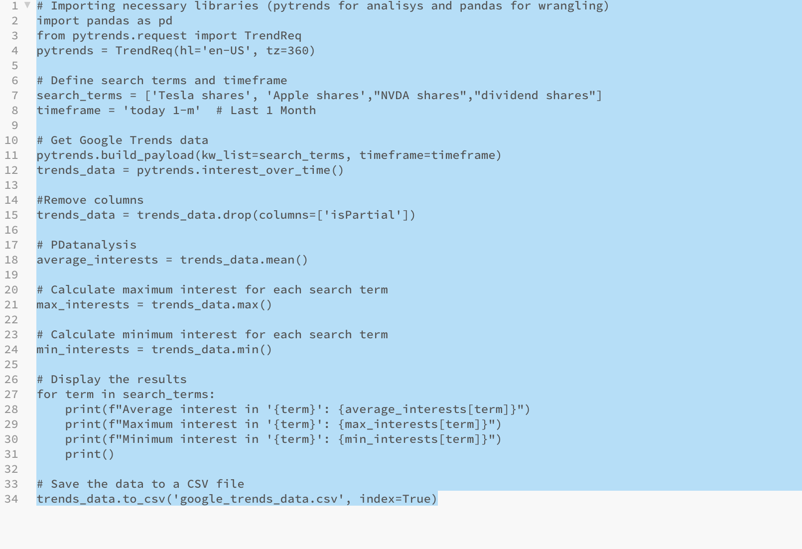
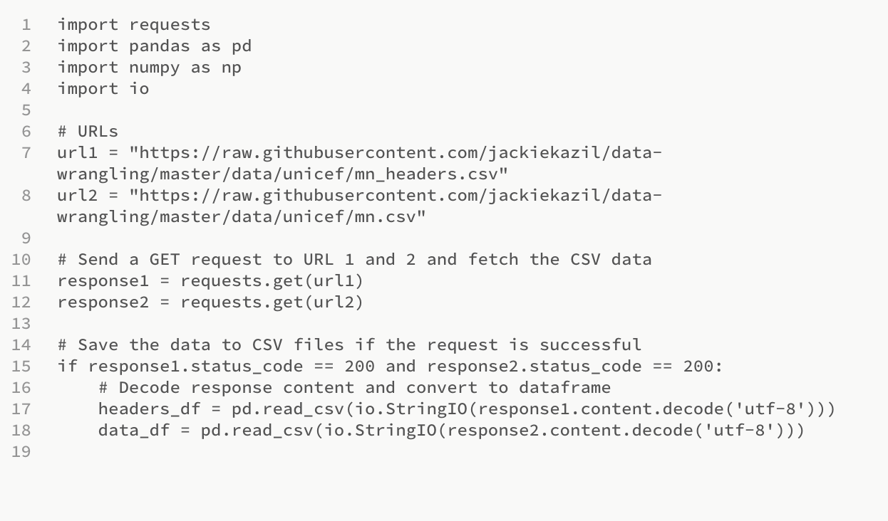
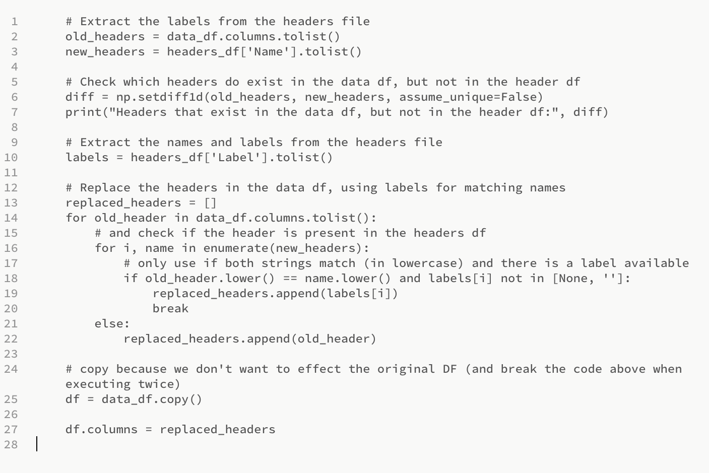
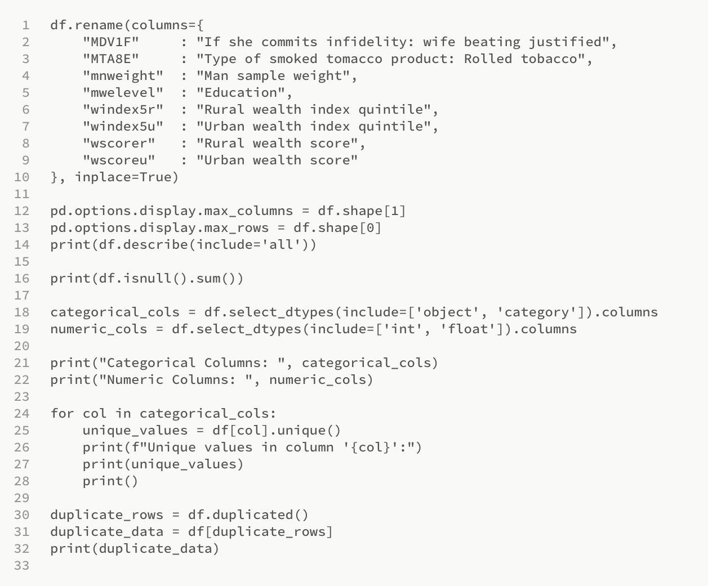
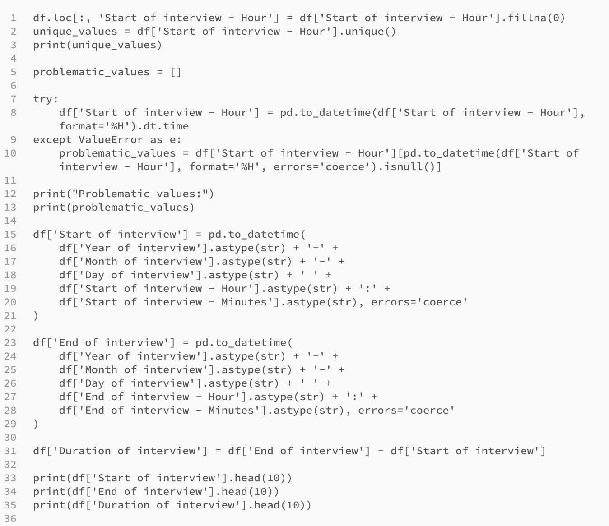

Discussion Forum
Collaborative Discussion 1 - The Data Collection Process
Initial Post:
The widespread collection of extensive data through the Internet of Things (IoT) offers substantial opportunities for organizations to stimulate innovation and enhance decision-making by utilizing evidence-based insights and tailored experiences.
Through harnessing vast volumes of data, businesses can discern trends, patterns, and correlations that optimize procedures, refine services, and foster economic growth. Nonetheless, despite its benefits, this practice has its constraints and hazards. The quality and integrity of data are of utmost importance, as inaccuracies and biases can compromise the validity of analyses and subsequent actions (Huxley, 2020).
Furthermore, the sheer magnitude of data presents challenges in terms of storage, processing, and analysis capabilities, necessitating ongoing technological investments (Nasser and Tariq, 2015).
Khanan et al. (2019) also noted that privacy concerns are significant, demanding robust safeguards and adherence to ethical considerations. In addition, cybersecurity threats pose significant risks, emphasizing the need to strengthen data infrastructures against unauthorized access and exploitation. More reliance on data may result in a narrow viewpoint, disregarding the qualitative subtleties that offer comprehensive insights.
Moreover, biases inherent in the data can skew outcomes and decision-making processes. Overcoming these challenges necessitates continuous technological advancements, compliance with evolving legal frameworks, and a balanced approach that recognizes the benefits and limitations of large-scale data collection. With these considerations in mind, organizations and institutions can effectively navigate the intricate IoT data landscape and unlock the full potential of data-driven strategies.
References
Huxley, K. (2020) ‘Data Cleaning’, in Atkinson, P., Delamont, S., Cernat, A., Sakshaug, J.W., & Williams, R.A. (eds) Quantitative Data Preparation & Secondary Data Analysis. SAGE Research Methods Foundations. DOI: https://doi.org/10.4135/9781526421036842861
Khanan, A., Abdullah, S., Mohamed, A. H. H., Mehmood, A., &Ariffin, K. A. Z. (2019). Big data security and privacy concerns: a review. In Smart Technologies and Innovation for a Sustainable Future: Proceedings of the 1st American University in the Emirates International Research Conference—Dubai, UAE 2017 (pp. 55-61). Springer International Publishing.
Nasser, T., & Tariq, R. S. (2015). Big data challenges. J ComputEng Inf Technol 4: 3. doi: http://dx. doi. org/10.4172/2324, 9307(2).
Peer Response 1:
Dear Daisy, I concur with your assertion regarding the significance of privacy concerns, particularly within the Internet of Things (IoT) and data science.
With its interconnected devices and data collection capabilities, IoT holds considerable promise for generating invaluable insights and facilitating improved decision-making through data science. However, as rightly highlighted by your observation, the escalating magnitude of data generated by the IoT creates risks to privacy and the potential expansion of surveillance capitalism, as recently described in an example by Motlagh et al. (2017).
A comprehensive approach encompassing technical, legal, and ethical measures is imperative to mitigate these concerns. Robust security protocols should be implemented to safeguard the data procured by IoT devices and data anonymization and encryption techniques to protect individuals' identities and sensitive information.
Furthermore, acquiring informed consent from users (in line with GDPR) is essential in ensuring their willingness or objection to sharing data enabling individuals to make informed decisions concerning their privacy. With this in mind, it is evident that the integration of privacy by design principles into the development and deployment of IoT-enabled data science solutions holds paramount importance for the safety of consumers, as argued by Atlam and Wills (2020). This approach ensures the prioritization of privacy considerations from the nascent stages of system design, embedding privacy protections within the technological structures of IoT.
By amalgamating these measures, data scientists and organizations can navigate the confluence of data science and the IoT while safeguarding user privacy. In summary, striking a positive equilibrium between harnessing the potential of IoT-generated data and protecting individuals' privacy rights becomes an indispensable objective.
References:
Atlam, H. F., & Wills, G. B. (2020). IoT security, privacy, safety and ethics. Digital twin technologies and smart cities, 123-149.
Motlagh, N. H., Bagaa, M., &Taleb, T. (2017). UAV-based IoT platform: A crowd surveillance use case. IEEE Communications Magazine, 55(2), 128-134.
Peer Response 2:
Dear Daisy,
As mentioned in your post, Data cleaning is a crucial aspect of data science, serving several essential purposes. Firstly, it involves identifying and rectifying errors, inconsistencies, and inaccuracies present in datasets, therefore enhancing data quality. Second, data cleaning improves the data's accuracy, completeness, and reliability, leading to more dependable analysis and modelling outcomes. Intrinsically a reliable analysis is predicated on clean data, which ensures accurate and representative results by eliminating outliers and inconsistent values.
Third, data cleaning is integral to data preprocessing in machine learning and data mining, facilitating subsequent analysis and modelling by handling missing data, normalizing variables, and removing irrelevant features. Fourth, addressing biases within the data is another critical function of data cleaning, mitigating potential skewing effects and enhancing the generalisability of analysis.
Despite the above, it is essential to note that data cleaning can introduce a negative effect (Saraswathi and Balu, 2013). Overzealous data cleaning or improper handling of outliers and missing values can potentially result in data loss or distortion. In such cases, the integrity and representativeness of the dataset may be compromised, leading to biased or unreliable analysis. Therefore, careful consideration and expertise are required when cleaning data to avoid unintended negative consequences.
Famili et al. (1997) mention that investing in data cleaning saves time and resources in the long run, as issues and errors during analysis or modelling stages are prevented.
In summary, while data cleaning is paramount in data science for improving data quality, it is crucial to approach it judiciously to mitigate any potential adverse effects and ensure the reliability and validity of the analysis.
References:
Famili, A., Shen, W. M., Weber, R., &Simoudis, E. (1997). Data preprocessing and intelligent data analysis. Intelligent data analysis, 1(1), 3-23.
Peer Response 3:
Hi Simon, thanks for your insightful post. Big-data analysis has opened up new possibilities for investigating data sources that have historically received little attention, including the vast amount of data available on the Internet, the data generated by Internet of Things (IoT) devices, log files, and unstructured data. Expanded access to diverse data sets presents valuable insights and knowledge-generation opportunities. However, it also raises important considerations.
Firstly, data privacy becomes a critical concern when dealing with large volumes of data. As more data is collected and analysed, protecting individuals' personal information and maintaining data confidentiality becomes paramount. Safeguarding privacy rights and complying with relevant regulations are essential for big-data analysis.
Secondly, data quality is crucial in extracting meaningful insights from big data. Maintaining high data quality becomes challenging with the increasing variety and volume of data sources. Only accurate or complete data can significantly impact the reliability and validity of analytical results. Therefore, data scientists and analysts must employ robust data quality management strategies to address data inconsistencies, duplication, reliability, and alignment issues.
Lastly, the capabilities of data scientists and analysts play a vital role in effectively harnessing the potential of big data. The complexity and scale of big data require individuals with the appropriate knowledge, skills, and expertise to handle data processing, analysis, and interpretation. Adequate training and continuous professional development are essential to enhance the capabilities of data scientists and ensure they can leverage the full potential of big data for informed decision-making and valuable insights.
In summary, while big-data analysis offers immense possibilities for exploring untapped data sources, addressing concerns related to data privacy, data quality, and the competencies of data scientists is crucial to maximise the benefits and mitigate potential risks associated with this emerging field of research.
Summary post:
Our colleagues acknowledge the significant opportunities presented by the widespread collection of extensive data through the Internet of Things (IoT) for organisations to drive innovation and enhance decision-making. By harnessing large volumes of data, businesses can uncover valuable insights, optimise processes, refine services, and stimulate economic growth. However, they also recognise the limitations and risks associated with this practice, in line with the risks outlined by Tawalbeh et al. (2020).
One primary concern in the discussion is the quality and integrity of data, as inaccuracies and biases can compromise the validity of analyses and subsequent actions. Ensuring accurate and reliable data is crucial for making informed decisions. Additionally, the sheer magnitude of data poses challenges regarding storage, processing, and analysis capabilities, necessitating ongoing technological investments, as highlighted by Gartner (2015).
Privacy concerns and cybersecurity threats are also significant considerations raised in the discussion. Here suggestions rotated around robust safeguards and adherence to ethical considerations to protect individuals' privacy and secure data infrastructures against unauthorised access and exploitation. Furthermore, an overreliance on data may lead to a narrow viewpoint, disregarding qualitative subtleties that provide comprehensive insights.
Moreover, biases in the data can skew outcomes and decision-making processes, highlighting the need for continuous technological advancements, compliance with evolving legal frameworks, and a balanced approach that recognises the benefits and limitations of large-scale data collection.
In conclusion, organisations and institutions must address these challenges and navigate the complex IoT data landscape while unlocking the full potential of data-driven strategies. Adopting a comprehensive approach encompassing technical, legal, and ethical measures can mitigate risks, protect privacy, and ensure responsible and effective use of IoT-generated data, as argued by Alles and Gray (2016).
References:
Alles, M., & Gray, G. L. (2016). Incorporating big data in audits: Identifying inhibitors and a research agenda to address those inhibitors. International Journal of Accounting Information Systems, pp. 22, 44–59.
Gartner (2015). Big Data Hypecycle. Gartner. Available at: https://www.gartner.com/en/products/special-reports [Accessed 28 Sep. 2022].
Tawalbeh, L. A., Muheidat, F., Tawalbeh, M., &Quwaider, M. (2020). IoT Privacy and security: Challenges and solutions. Applied Sciences, 10(12), 4102.
Collaborative Discussion 2:
Initial Post:
The General Data Protection Regulation (GDPR), enacted in 2018, has provided a comprehensive framework for data protection across the European Union (EU). It primarily focuses on protecting personal data, giving EU citizens more control over their personal information. This regulation significantly influences national laws on data protection, including those in Germany, and this post aims to compare GDPR's approach to securing personal data and the corresponding rules of the German Federal Data Protection Act (BDSG) as described by Bundesgesetzblatt (2017).
Under the GDPR, securing personal data is a fundamental aspect, and it uses principles like 'Privacy by Design and Default' to ensure the same. Article 32 of the GDPR mandates appropriate technical and organisational measures to secure personal data, including pseudonymisation and encryption (Information Commissioner's Office, 2023). It also necessitates resilience of processing systems and services, the ability to promptly restore the availability of personal data after a technical incident, and regular evaluation of the effectiveness of security measures.
The BDSG, updated in 2017 to align with GDPR, also emphasises the security of personal data. Section 64 of the BDSG stipulates similar requirements to those outlined in Article 32 of the GDPR, including pseudonymisation, encryption, resilience, and testing of technical and organisational measures. However, the BDSG goes further by mandating a more specific set of measures for public bodies and requiring special conditions for data processing by religious bodies (Weiß,2022).
A noteworthy difference between the GDPR and BDSG lies in their enforcement. While both have stringent penalties for non-compliance, the BDSG involves a tiered structure for penalties based on the nature of the violation, the size of the organisation, and the type of data affected. This approach differs from the GDPR, which caps fines at €20 million or 4% of the global annual turnover, whichever is higher (Wolff, 2018).
In conclusion, the GDPR and BDSG show a solid commitment to securing personal data. Despite their similarities, each has unique enforcement mechanisms, reflecting the broader context in which each operates. While the GDPR provides a generalised set of rules applicable across the EU, the BDSG is shaped by specific national concerns, demonstrating that while harmonisation is possible in data protection laws, the impact of local factors and specificities is still crucial.
Reference list:
Bundesgesetzblatt (2017). BundesgesetzblattBGBl. Online-Archiv 1949 - 2022 | Bundesanzeiger Verlag. [online] www.bgbl.de. Available at: http://www.bgbl.de/xaver/bgbl/start.xav?startbk=Bundesanzeiger_BGBl&jumpTo=bgbl117s2097.pdf [Accessed 27 Jun. 2023].
Information Commissioner's Office (2023). A guide to the data protection principles. [online] ico.org.uk. Available at: https://ico.org.uk/for-organisations/uk-gdpr-guidance-and-resources/data-protection-principles/a-guide-to-the-data-protection-principles/.
Weiß, M. (2022). Öffnungsklauseln in der DSGVO und nationaleVerwirklichung im BDSG. doi:https://doi.org/10.5771/9783748929185.
Wolff, A.H. (2018). The Implementation of Administrative Fines under the General Data Protection Regulation from the German Perspective. Int’l J. Data Protection Officer, Privacy Officer & Privacy Couns, 2.
Peer Response 1:
Dear Nicholas,
Your post about the similarities between Canada and EU data privacy regulation has been very informative. EU's General Data Protection Regulation (GDPR) is a framework implemented in the European Union (EU) to regulate data protection practices and address concerns about the storage and use of personal information. It applies to individuals and organizations involved in processing or controlling personal data. On the other hand, in Canada, the Personal Information Protection and Electronic Documents Act (PIPEDA) serves as legislation to protect personal information, primarily in commercial contexts, as described by Merrick and Ryan (2019). While the GDPR applies to all bodies processing or controlling personal data, PIPEDA explicitly covers Canada's commercial use of personal information. Public bodies in Canada, however, are not subject to PIPEDA but fall under the provincial Freedom of Information and Privacy Acts focusing on accessing and protecting information within the public sector, aiming to increase transparency and accountability for government agencies by allowing individuals to request non-sensitive data while ensuring the confidentiality of personal information, as described by Oralda and Lizar (2022).
Notwithstanding, both the GDPR and PIPEDA play vital roles in safeguarding personal information, albeit with different scopes and applicability. The GDPR ensures data protection practices within the EU, while PIPEDA addresses the commercial use of personal information in Canada. Meanwhile, the Freedom of Information and Privacy Act enhances transparency and accountability, specifically within the public sector, by granting individuals access to non-sensitive government data while protecting their personal information.
References:
Merrick, R., & Ryan, S. (2019). Data privacy governance in the age of GDPR. Risk Management, 66(3), 38-43.
Ortalda, A., & Lizar, M. (2022). Report on the Adequacy of Identity Governance Transparency: GDPR, PIPEDA, and the Pan-Canadian Trust Framework (PCTF).
Peer Response 2:
Hi Shaun,
Your post highlights some similarities and convergences between both frameworks, and ultimately, GDPR and the UK's ICO guidelines within the Data Protection Act (DPA) 2018 framework both stress strong data protection measures. They share the application of the 'CIA triad', which stands for confidentiality, integrity, and availability, to safeguard data. However, as you rightly pointed out, a significant differentiation emerges in how they handle the practical implementation of data security measures.
The DPA 2018 demonstrates flexibility by offering the possibility for exemptions from specific GDPR provisions in line with the principle of proportionality. This principle suggests that while data security is paramount, it should not impose unnecessarily rigid or excessive measures that could obstruct critical data processing activities (Georgiadis and Poels,2022).
However, exemptions are not unregulated. To ensure that the intent of data protection is not compromised, the principle of accountability stipulates that exemptions must be well-documented, justified, and demonstrate compliance with broader data protection objectives. This process demonstrates the commitment of the ICO/DPA to strike a balance between ensuring data security and avoiding hindrances to necessary data processing activities.
In conclusion, while GDPR and the ICO/DPA stress the importance of stringent data security, their approach to flexibility and proportionality differ. The ICO/DPA guidelines reflect the nuanced needs of different contexts and uphold the core principles of data protection, demonstrating the importance of a balanced, pragmatic approach in implementing data security measures.
References:
Georgiadis, G.,andPoels, G. (2022). Towards a privacy impact assessment methodology to support the requirements of the general data protection regulation in a big data analytics context: A systematic literature review. Computer Law & Security Review, 44, 105640.
Summary post:
Data protection and the General Data Protection Regulation (GDPR) have become crucial topics in today's digital landscape. The GDPR, enacted in the European Union (EU) in 2018, sets comprehensive standards for the processing and protecting of personal data, aiming to safeguard individuals' privacy rights. This regulation has significantly impacted globally, serving as a model for similar data protection frameworks implemented in various countries worldwide (Goddard, 2017).
Similar processes inspired by the GDPR have been introduced in many countries to enhance data protection practices, as mentioned by colleagues in their recent posts. These initiatives involve formulating and implementing legislation, regulations, and guidelines that align with the core principles and requirements of the GDPR. The focus is on promoting transparency, accountability, and individual control over their data.
These data protection measures typically encompass various aspects, including obtaining informed consent for data processing, ensuring data accuracy and integrity, implementing appropriate security measures, and providing individuals with the right to access, rectify, and erase their data. Data breach notification requirements and stringent enforcement mechanisms are also established to enhance compliance and deter data misuse or unauthorised access.
Countries adopt similar data protection processes to establish a harmonised data privacy and protection approach (Greengard,2018). This approach aligns with the global trend towards more robust data protection regulations and recognising privacy as a fundamental human right. Implementing these measures enhances individuals' trust in data-driven technologies, facilitates cross-border data transfers, and fosters responsible data-handling practices among organisations.
Adopting data protection frameworks inspired by the GDPR in various countries demonstrates the growing importance of safeguarding personal data and upholding privacy rights. These efforts contribute to a more comprehensive and consistent global approach to data protection, benefiting individuals, organisations, and society.
References:
Goddard, M. (2017). The EU General Data Protection Regulation (GDPR): European regulation that has a global impact. International Journal of Market Research, 59(6), 703-705.
Greengard, S. (2018). Weighing the impact of GDPR. Communications of the ACM, 61(11), 16-18.
Artefacts
Normalisation Exercise:
The exercise aims to transform a provided Excel spreadsheet into the third normal form through normalisation. Normalisation establishes relations that effectively fulfil an organisation's data needs (Beeri et al., 1989 ). Connolly and Begg (2014) argue that these relations possess three key characteristics that enhance the efficiency of managing and storing a database:
- 1. The relations are designed with a minimal number of attributes.
- 2. Logically related attributes are appropriately grouped in the database.
- 3. Efforts are made to minimise redundancy in the database structure.
The normalisation is shown on the screenshots below and the sql code has been derived via sql workbench.
Initial Format:
First Normalisation:

Second Normalisation:
Table 1:
Table 2:
Table 3:
Third Normalisation:
The tables provided do not exhibit any transitive dependencies, indicating that they are already in the third normal form. Therefore, the task of normalizing the data to the third normal form is complete.
SQL Code:
CREATE TABLE `STUDENTS` (
`StudentNumber` INT NOT NULL ,
`StudentName` VARCHAR(50) NOT NULL ,
`ExamScore` INT NOT NULL ,
`Support` BOOL NOT NULL ,
`Birthday` DATE NOT NULL ,
PRIMARY KEY (
`StudentNumber`
)
);
CREATE TABLE `COURSES` (
`CourseName` VARCHAR(30) NOT NULL ,
`TeacherName` VARCHAR(50) NOT NULL ,
`ExamBoards` VARCHAR(10) NOT NULL ,
PRIMARY KEY (
`CourseName`
)
);
CREATE TABLE `ENROLLMENTS` (
`StudentNumber` INT NOT NULL ,
`CourseName` VARCHAR(30) NOT NULL ,
PRIMARY KEY (
`StudentNumber`,`CourseName`
)
);
ALTER TABLE `ENROLLMENTS` ADD CONSTRAINT `fk_ENROLLMENTS_StudentNumber` FOREIGN KEY(`StudentNumber`)
REFERENCES `STUDENTS` (`StudentNumber`);
ALTER TABLE `ENROLLMENTS` ADD CONSTRAINT `fk_ENROLLMENTS_CourseName` FOREIGN KEY(`CourseName`)
REFERENCES `COURSES` (`CourseName`);
References:
Beeri, C., Bernstein, P. A., & Goodman, N. (1989). A sophisticate's introduction to database normalisation theory. In Readings in artificial intelligence and databases (pp. 468-479). Morgan Kaufmann.
Connolly, T., Begg, C. (2014) Database Systems. A Practical Approach to Design, Implementation, and Management. 6th ed. Harlow: Pearson Education Limited.
API Security Requirements Exercise:
Trading activities use APIs to access financial information for decision-making and to generate trading strategies. For this purpose, an evaluation of the security requirements of the Premium Yahoo Finance API (PYF) has been proposed. The tool enables data sharing, scraping, and connectivity with Python programs to gather real-time financial instrument data, which is used extensively for trading (Lee and Lee, 2023). For this exercise, the author has prepared a brief security requirements specification to mitigate risks associated with the API related to PYF in line with principles proposed by Siriwardena (2014).
1. Authentication and Authorisation:
- The PYF API should require secure authentication mechanisms, such as API keys or OAuth, to verify the identity of users accessing the API.
- Access to sensitive financial data or advanced features should be granted based on user authorisation levels.
2. Secure Communication:
- All data transmitted between the Python program and the YPYF
- API should be encrypted using secure protocols like HTTPS to ensure confidentiality and integrity.
- The API should employ secure socket layer (SSL) certificates to validate the authenticity of the Yahoo Finance server and establish a secure connection.
3. Input Validation and Data Sanitisation:
- The API should validate and sanitise all user input to prevent common security vulnerabilities, such as injection attacks (e.g., SQL injection or code injection).
- User-supplied data should be properly encoded, escaped, or parameterised to prevent data manipulation or unauthorised access to sensitive information.
4. Access Control and Data Privacy:
- The PYF API should enforce proper access controls to limit access to authorised users and prevent unauthorised data retrieval or modification.
- Personally identifiable information and sensitive financial data should be protected by implementing appropriate data masking, encryption, or anonymisation techniques.
- Compliance with relevant data protection regulations, such as GDPR or financial industry standards, should be ensured when handling personal or financial data.
5. Logging and Monitoring:
- For auditing and troubleshooting purposes, the API should maintain comprehensive logs of all API activities, including user actions, errors, and access attempts.
- Real-time monitoring mechanisms should be in place to detect and respond to any security incidents, such as abnormal API usage patterns or unauthorised access attempts.
6. Regular Security Assessments:
- Periodic security assessments, including vulnerability scanning and penetration testing, should be conducted to identify and address any potential security weaknesses in the Yahoo Finance API.
- The API should stay updated with Yahoo's latest security patches and updates to mitigate known vulnerabilities.
Adhering to these security requirements aims to mitigate risks associated with the Yahoo Finance API, ensuring the confidentiality, integrity, and availability of financial data accessed, shared, and analysed through Python programs.
References:
Lee, J., & Lee, C. F. (2023). Data Collection, Presentation, and Yahoo! Finance. In Essentials of Excel VBA, Python, and R: Volume I: Financial Statistics and Portfolio Analysis (pp. 19-80). Cham: Springer International Publishing.
Siriwardena, P. (2014). Advanced API Security. Apress: New York, NY, USA.
Data Sources and applied wrangling examples in real life (unit 2/3/4):
The core book provided (Kazil and Jarmul, 2016) was slightly outdated and lacked core elements such as panda; therefore, I decided to engage in real-life data wrangling and data sources exercises that could aid my investment skills. My aim was to gather stock data and trends around dividend stocks from google trends and create a signal that could be used for alfa generation. In this instance, the provided code collects and analyses data from Google Trends using Python. It retrieves search interest data for the terms 'Tesla' and 'Apple' over the last month, performs data wrangling by removing unnecessary columns, and then calculates the average, maximum, and minimum interest for each term. Final results are displayed and saved to a CSV file for further potential analysis. The code uses Python to demonstrate how to gather and analyse search interest data from Google Trends.
Code:

Result:
Average interest in 'Tesla shares': 42.407407407407405
Maximum interest in 'Tesla shares': 69
Minimum interest in 'Tesla shares': 14
Average interest in 'Apple shares': 35.333333333333336
Maximum interest in 'Apple shares': 51
Minimum interest in 'Apple shares': 20
Average interest in 'NVDA shares': 2.888888888888889
Maximum interest in 'NVDA shares': 11
Minimum interest in 'NVDA shares': 0
Average interest in 'dividend shares': 73.33333333333333
Maximum interest in 'dividend shares': 100
Minimum interest in 'dividend shares': 42
In this instance we could clearly see how interest has changed or increased for the relevant search terms.
Reference:
Kazil, J, & Jarmul, K 2016, Data Wrangling with Python : Tips and Tools to Make Your Life Easier, O'Reilly Media, Incorporated, Sebastopol. Available from: ProQuest Ebook Central. [17 July 2023].
Data Wrangling:
Data wrangling is crucial in the Data Science Process between data acquisition and exploratory data analysis (EDA). It encompasses a set of tasks performed to understand and prepare data for machine learning purposes. It is widely recognised that data wrangling can consume a significant portion of a data scientist's project time, sometimes between 50% to 80%, as argued by Watson et al. (2017)
While some may perceive data wrangling as routine custodial work, its proper execution plays a pivotal role in extracting accurate insights from valuable enterprise data assets. In addition, the significance of proficient data wrangling skills lies in integrating information from multiple data sources, addressing common transformation challenges, and resolving data cleansing and quality issues.
A skilled data wrangler possesses an intimate understanding of the data and constantly seeks opportunities to enrich it. Flawless data is a rarity in real-world scenarios, especially when dealing with rapidly evolving technologies such as social media and the Internet of Things. Consequently, a data wrangler must deeply understand the business context to interpret, clean, and transform the data into a suitable format. Although it may sound simple, the reality can be frustratingly complex.
The data science process can only progress meaningfully with solid data-wrangling skills, and data scientists who neglect the importance of data wrangling may find themselves missing to understand or misinterpret their datasets. While data wrangling requires significant time and effort, its benefits are invaluable (Science, 2018).
As the exercise book did not provide pandas' capabilities, the author has decided to rewrite the code using more up-to-date libraries than those supplied in the core book.
Section 1 - Fetching data from URLs and creating dataframes:
This section is responsible for sending GET requests to the URLs provided, decoding the responses, and converting them into dataframes.

Section 2 - Extracting headers and replacing them in the data dataframe:
This section extracts the headers from data and header dataframes, checks which headers exist in the data dataframe but not in the header dataframe, and then replaces the headers in the data dataframe using labels for matching names.

Section 3 - Handling Null Values, Renaming Columns, Identifying Unique Values and Duplicates:
This section is responsible for renaming the columns to something more understandable, handling null values, identifying the categorical and numeric columns, finding the unique values for each categorical column, and finding the duplicate rows in the dataframe.

Section 4 - Handling Date and Time Data:
In this section, the data related to date and time is handled. First, any null values in the 'Start of the interview - Hour' column are filled with 0. Then, an attempt is made to convert the column to datetime format. Any problems with this conversion are caught and printed. Finally, the 'Start of interview', 'End of interview', and 'Duration of interview' columns are created, and the first ten values of these new columns are printed.

The results are as follows:
Reference:
Science, ODSC. (2018). Top Data Wrangling Skills Required for Data Scientists. [online] Medium. Available at: https://odsc.medium.com/top-data-wrangling-skills-required-for-data-scientists-8a6b7dc604a7 [Accessed 18 Jul. 2023].
Watson, A., Babu, D.S.V. and Ray, S., 2017, December. Sanzu: A data science benchmark. In 2017 IEEE International Conference on Big Data (Big Data) (pp. 263-272). IEEE.
Meeting Notes
Reflection on the group project:
Engaging in a collaborative group project with team members possessing diverse backgrounds in business, data science, and IT proved to be an enriching and intellectually stimulating experience. Our team worked together to design a database system for an established recruitment company, following the structured methodology outlined in Connolly et al.'s (2014) proposed database system development lifecycle.
By adhering to this systematic approach, we sincerely appreciated the importance of well-designed databases that seamlessly integrate with the company's applications, facilitating efficient business operations. Throughout the project, we followed a methodical process of gathering requirements and analysing different user groups and management needs. This thorough effort allowed us to identify relevant data entities, relationships, and attributes, providing a comprehensive understanding of the underlying data and how it should be organised within the database system.
Moving into the database design phase, we developed a logical data model that accurately represented the intricate connections between tables while aligning with the business requirements. This approach served as a crucial foundation for the subsequent physical database design, where we meticulously transformed the abstract conceptual model into a coherent schema, defining appropriate data types. In addition, this phase required a deep understanding of the database system and the intended relationships, which presented a challenge for me, coming from a business background.
Once the physical modelling stage was completed, we envisioned the intricacies of data entry, storage, and retrieval processes, which set the stage for the implementation phase. To guide our implementation efforts, we devised a comprehensive database implementation strategy outlining our proposed methods for table creation, data population, and relationship establishment. In line with our strategic vision, we opted to utilise Python scripting as a facilitating tool, enabling seamless interaction with the underlying database management system and aligning with the requirements of the recruitment company. Our primary objective was to enhance the database system's operational efficiency and functional integrity, thereby improving the recruitment company's ongoing processes.
The collaborative synergy among team members proved highly beneficial, and our collective efforts resulted in commendable outcomes, reflected in the grade we received. Due to our prior acquaintance, formal meeting notes were unnecessary as we relied on video conferencing and a shared Google Doc for effective communication, streamlined requirements gathering, and equitable distribution of tasks. Leveraging our strengths, I contributed to the business requirements and specifications of the database design, while others focused on technical considerations and specifications, ensuring a harmonious and equitable partnership.
In conclusion, the execution of the database design project, guided by the "database system development lifecycle" framework, has been advantageous. This practical exercise taught us essential skills applicable to future database development endeavours. Moreover, it exemplified the power of successful teamwork in overcoming challenges and improving personal weaknesses, fostering a congenial and intellectually invigorating work environment.
Reference:
Connolly, T., Begg, C., & Connolly, T. (2014). Database Systems: A Practical Approach to Design, Implementation, and Management, Global Edition. Pearson Education Limited.
Reflective Piece
Reflective Essay:
As an individual with a background in trading and limited experience in web scraping and data mining, the objective in undertaking this module was to acquire proficiency in processing and analysing Big Data to generate new trading algorithms. While familiar with statistical and data analytics, I expected to encounter novel techniques to expand my knowledge of big-data analysis. However, I discovered that a significant emphasis of the module was placed on data wrangling, a domain that did not directly align with improving my day-to-day trading activities.
Furthermore, I encountered several challenges throughout the module due to my background and limited prior experience in databases and SQL. In addition, the intricacies of designing and selecting between relational databases and NoSQL alternatives proved challenging due to my lack of experience in the field. While these skills are considered indispensable for data scientists, their acquisition presented a considerable learning curve for me. I had particular challenges keeping motivated due to the lack of practical application in my day-to-day activities. Although the module introduced NoSQL database management systems, I needed external resources and additional courses to address gaps in my understanding of SQL and MySQL, which were necessary for effectively working with relational databases. Regrettably, the module did not provide additional resources to address this knowledge gap.
Consequently, I experienced a sense of disappointment stemming from my expectations, realising that the module catered more towards individuals working in IT teams or those frequently engaging with database systems and selection than individuals working for smaller realities. Nonetheless, I recognised the pedagogical value of learning these foundational concepts, as acquiring new knowledge and practical skills is fundamental to personal growth (Johnson Jr., 1985). Notwithstanding, given that data-centric activities, such as trading, demand a comprehensive understanding of theoretical concepts and applied practice, I acknowledge that I derived some benefits from the module.
A central focal point of the module encompassed the intricate design and selection between relational databases and NoSQL alternatives. I found acquiring expertise in these areas challenging due to my lack of experience in the field. However, it became apparent that these foundational skills are indispensable for any proficient data scientist, and the demand for such competencies remains substantial within the contemporary job market and, therefore, suitable for the individuals the module addressed (Miller and Hughes, 2017). Notwithstanding, the module incentivised me to approach my trading activities more IT-driven by studying Amazon Web Services (AWS) as a remote computing platform and storing my financial data in a relational database for use by AWS automated execution and computing capabilities. Ultimately, the module gave me a significant knowledge base to aid this endeavour significantly.
In addition to relational databases, the module introduced NoSQL alternative database management systems (DBMSs), which our team utilised in our final project. It was intriguing to explore how traditional relational databases exhibit a rigid structure that mitigates data duplication but can potentially hamper query performance, while NoSQL alternatives offer greater flexibility and scalability at the expense of increased storage requirements. This exposure to contemporary developments in DBMSs rendered the curriculum more aligned with the evolving market, as addressed in the final module's lecturecast.
In addition, the module extensively covered theoretical concepts related to Application Programming Interfaces (APIs), the normalisation of databases, and their applications in web scraping and data wrangling. The extensive use of APIs in my day-to-day activities underscored their pivotal role as crucial interfaces for system interactions, particularly in financial services, where they are standard practice for interaction and data exchange (Premchand and Choudhry, 2018). Furthermore, the module emphasised the susceptibility of APIs to potential security breaches, highlighting the importance of securing APIs by adhering to the Open Worldwide Application Security Project's API security guidelines (OWASP, 2019). As a trader, these guidelines hold significant importance due to the potential financial losses resulting from data breaches (Idris et al., 2021)
The group projects offered substantial value as my team comprised a data scientist and a database architect, while my role entailed providing business-oriented support based on my experience as a company director and recent MBA graduate. By leveraging our distinct skill sets and experiences, the team mutually benefited from collaboration, and I had the opportunity to contribute insights regarding the company we utilised in the project as one of its founding members.
Additionally, the valuable knowledge shared by other team members facilitated the realisation of the project while demonstrating the potential of databases and their applications in my activities. Moreover, the team exhibited strong trust and willingness to collaborate, making the process enjoyable and successful, as evidenced by the team's achievement in our first project evaluation.
Furthermore, the practical experience of designing and implementing a database for a recruitment company provided valuable insights into the operational aspects of the business and the challenges it faced. Engaging in extensive deliberations with the team, we evaluated various DBMSs and user requirements, weighing the merits and drawbacks of our specific business use case. Through this collaborative endeavour, we all acquired profound knowledge by collectively deciding the optimal path forward and dividing the task according to our relevant skills.
Whilst the module addressed various topics and the theoretical foundation provided a solid starting point, incorporating more hands-on exercises, mainly focusing on NoSQL databases and APIs, would have enhanced the overall learning experience. Nonetheless, I gained valuable insights into various types of databases, their respective strengths and weaknesses, and the fundamental principles of executing database projects within a business context. These newfound skills are already highly beneficial to my trading background, and I have initiated several projects directly from the knowledge acquired during this module.
In conclusion, implementing a structured and organised approach to data storage through a Database Management System (DBMS) offers several advantages in my daily practice. On the one hand, it enables efficient storage, retrieval, and maintenance of large volumes of trading data. On the other hand, it facilitates comprehensive data analysis, thereby aiding in identifying patterns and trends for informed decision-making processes. Additionally, a DBMS supports risk management by providing the capability to monitor exposure, implement strategies, and maintain better control over trading operations (Pâuna, 2018).
References:
Idris, M., Syarif, I. and Winarno, I. (2021). Development of vulnerable web applications based on owasp API security risks. In 2021 International Electronics Symposium (IES) (pp. 190-194). IEEE.
Johnson Jr, L. J. (1985). Factors that influence skill acquisition of practicum students during a field-based experience (student teaching, content analysis, qualitative, competency-based). University of Illinois at Urbana-Champaign.
Miller, S. and Hughes, D. (2017). The quant crunch: How the demand for data science skills is disrupting the job market. Burning Glass Technologies.
OWASP (2019) OWASP API Security Project. Available from: https://owasp.org/www-project-api-security/ [Accessed 15 April 2023].
PĂUNA, C. (2018). Automated Trading Software-Design and Integration in Business Intelligence Systems. Database Systems Journal, 9
Premchand, A. and Choudhry, A. (2018). Open banking & APIs for transformation in banking. In 2018 international conference on communication, computing and the Internet of Things (IC3IoT) (pp. 25-29). IEEE.